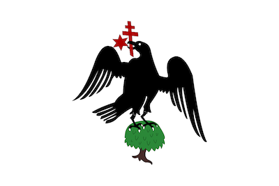

The Principality of Wallachia
Wallachia was a country located in modern-day Romania, north of the Lower Danube and southern of the Carpathains, which was officially ruled by Vlad III for almost 10 years.
In 1417, Wallachia was forced to accept the suzerainty of the Ottoman Empire, which lasted until the middle of the 19th century, when it united with Moldavia in 1859, and formed the United Principalities, and finally in 1881, the Kingdom of Romania.
The Return of the Voivode
With his father and elder brother dead, Vlad III was a potential claimant to the throne of Wallachia, and when his rival Vladislav II was out of the country, Vlad invaded Wallachia with the support of the Ottoman army and took his rightful place as Voivode, albeit for a short time, at least at first.
Backed by Hunyadi, Vladislav II returned with the remnants of his army, and Vlad was forced to flee to the Ottoman Empire once again.
After almost a decade in exile, Vlad Dracula, after prolonged negotiation with Hunyadi and the boyars (nobility), finally, in 1456, the Hungarian warlord informed the townspeople of Brașov that Vlad Dracula would be tasked with defending the Transylvanian borders. Later that same year, Vlad invaded Wallachia with Hungarian support, Vladislav II was killed in the attack, and the Son of the Dragon once again asserted his dominance over his homeland.
The Conflict with Mehmed II
Technically still a vassal state of the Ottoman Empire, Vlad III, after asserting his dominance over the local nobles, or Boyars, by the event that came to be known as the Easter Massacre, as well as having allied himself with the rest of the Christian world, set his plans into motion.
The voivode stopped paying the Sultan's taxes, and refused to come to Istanbul, to pay homage in person. Vlad Dracul pleaded poverty as reason not to travel to the Ottoman capital, as well as why he hadn't payed his tribute. Sultan Mehmed II first sent messangers to deliver his insatisfaction to Wallachia; Vlad Dracula famously nailed their turbants to their heads, since they refused to remove them in his presence, a sign of disrespect, even though the Wallachian prince had spent years in the Ottoman court and knew their culture forbade them of removing their hats in public.
Having literally killed the messangers, Vlad III had officially declared war on the Ottoman Empire. Mehmed then sent Hamza Pasha, a highly condecorated Ottoman officer, and his entourage to escort Vlad to Istanbul, but they instead were ambushed by Dracula's forces, and most were killed. The Wallachians then disguised themselves with the Ottoman soldiers' uniforms, and rode to the nearest Ottoman fort, and Vlad, in flawless Turkish, demanded that the gates be opened; when they entered, Vlad's men slaughtered the Turks.
Vlad III's ultimate downfall would come in the form of his own brother, Prince Radu III, also known as Radu the Handsome, or Radu the Fair. Radu was caught between the two great personalities of Vlad III and Mehmed II, but as a member of the Sultan's inner circle. Radu and Mehmed together defeated Vlad, and the Ottomans put prince Radu in the throne of Wallachia, as a vassal state to their own.